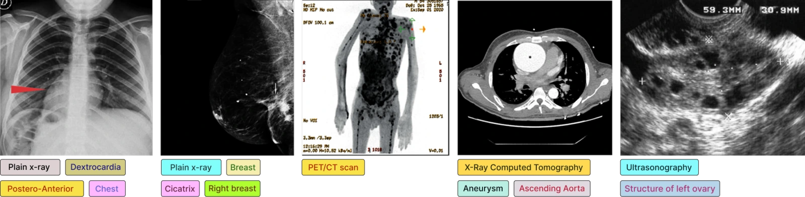

Multi-Label Medical Concept Recognition using Asymmetric Loss-Driven EfficientNet: Analyzing the Detection of Rare Concepts Under Long-Tailed Imbalance

Abstract
Multi-label concept recognition from radiology images is challenging due to the large label space and severe long-tailed class imbalance. This study examines the effects of some specific loss functions and their multiple configurations for multi-label concept recognition on ROCOv2, a long-tailed radiology dataset consisting of 79,789 images annotated with 1,947 UMLS (Unified Medical Language System) concepts. To this end, we conduct a three-phase empirical study. The first phase evaluates two base loss functions, Binary Cross-Entropy (BCE) and Asymmetric Loss (ASL), using the EfficientNet-B0 backbone. The second phase investigates the effect of different ASL hyperparameter settings under increased model capacity with EfficientNet-B4. Finally, the third phase analyzes hybrid loss formulations that combine BCE and ASL under the same network settings. In the experiments, promising concept recognition rates were achieved with ASL. ASL improves the overall concept recognition performance score from 0.5809 (BCE baseline) to 0.5882 on the EfficientNet-B0 backbone and to 0.5916 on the EfficientNet-B4 backbone. Although this increase in the overall score may seem modest, the local increases in specific classes are even stronger. In addition, hybrid and other variants were evaluated and it was observed that they do not provide further gains over the best ASL-only configuration.